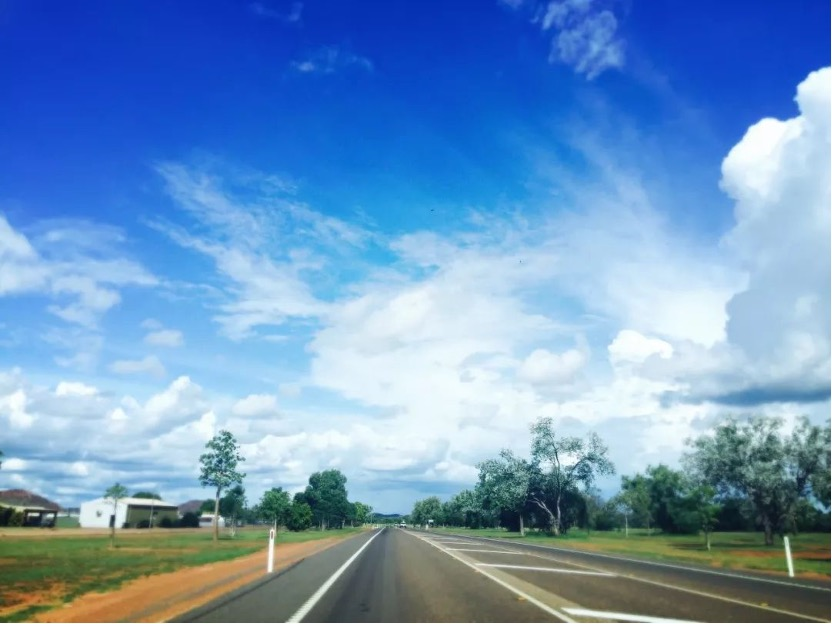
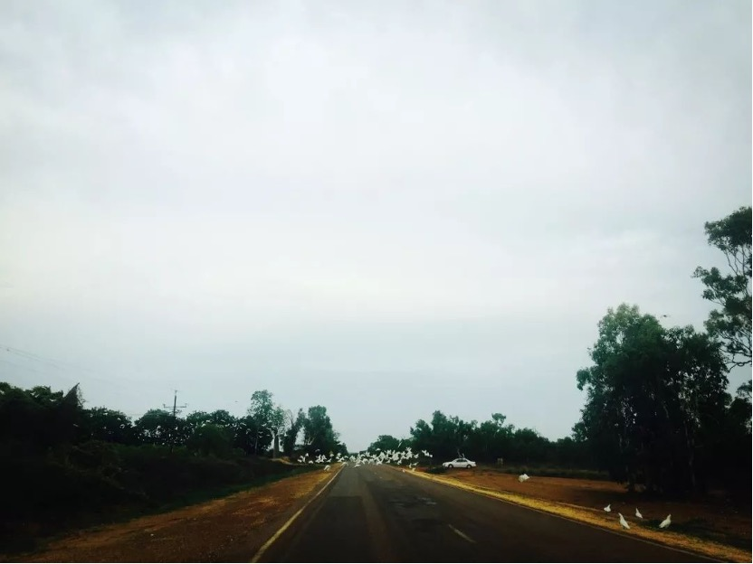

送朋友去机场，回来的路上抬头一看，Kununurra的蓝天，像棉花一样，仿佛只要搭好云梯，就能爬上去躲在被窝里翻滚几圈安心地睡上一觉。
于是我终于不再对燥热的Kununurra抱有敌意，就像当年我对同样天气的广东一样。
六年前的夏天，九月，第一次去广东读大学，跟着同班同学一起被两个班导领着逛校园。燥热的天气使得我的脸颊像两颗滚烫的红苹果，厚重的齐刘海更是雪上加霜，走路的间隙我不得不用手上的纸巾不断擦拭脸上渗出来的汗珠。转头看看身边的同学，一个个却是泰然自若的样子，再炎热的天气也不会在他们脸上留下痕迹。 半小时的校园介绍之后，终于回到了有空调的教室。摸摸脸蛋，掉在手上的全是纸巾干掉的屑。
六年后的夏天，一月，我踏在Kununurra45度高温的地面，朝着东方走去，背后却传来一阵阵灼热感，我急切地想要找一处树荫，却发现，周边枝繁叶茂的大树早已被主人家里的围栏给截掉一半，只剩一些小树苗探出头来看看是哪个可怜人又在经历暴晒。
当第十辆汽车从我身旁擦肩而过的时候，我终于开始意识到，在Kununurra步行是一件多么可笑的事情。
在第十一次，被太阳晒得恍恍惚惚的我，看到前方有几个黑影。澳洲原住民们光着脚，成群结队地，从我面前走过。当我内心惧怕他们的时候，他们却会扭着头咧开嘴对我道一声好。
蛙们都躺在40度的大马路上，直视紫外线的照射。它们或被碾压致死，或被直接晒死，但最后等待他们的，都只是风干。 路边驻守的我叫不出名字的鸟儿，以惨死的蛙与袋鼠为食。习惯了吃嗟来之食，也无法改变飞来横祸的命运，那些个由于养得太胖而煽动不了翅膀的鸟儿，被迎面而来的车撞个正着。
夜晚，却又是另外一番景象。 一个月里，在一半以上的天数里，闪电从我眼前一扫而过，我跟着它一路追到院子，搬一把座椅，仰靠在椅背上，等待着即将来临的雷鸣与暴风雨。 它们在黑影里一闪一闪，好像播放恐怖电影的前奏。我从不看恐怖电影，但我想象力足够丰富。 可是这前奏未免来得太长，声势太过浩大，以至于最后豆子般的雨点洒到我裤脚的时候，我都毫无反应。
我回到房间里，开一盏台灯，拉开帘子，在昏暗的灯光下看向窗外漆黑的一片，像白色的刀片一样划开夜空的闪电终于不再来访，只有淅淅沥沥的雨点打落到枝桠上的声音。 伴随着雨点急功近利的浮躁，躲在一旁的蛙们叫声连连，我分不清它们是喜悦还是难过。
好几个夜里，我独自醒来。 窗外明亮的路灯透过薄薄一层窗帘映射进房间，白色的家具使得整个房间即使在夜里也极为通透，彻夜明亮。 窗外的雨早早停下，只剩没尽兴的蛙还在与知了合奏，对面房屋的狗时不时加入。房间的老式空调也在发着微弱的颤抖声。 雨后泥土的气息从纱窗透进来，与走廊外室内厨房内残余的菜香味混在一起，竟也并未觉得难闻。
一月的炎夏里，时常来访的雨点洗刷了白日地表的焰火，却浇不息内心的燥热。